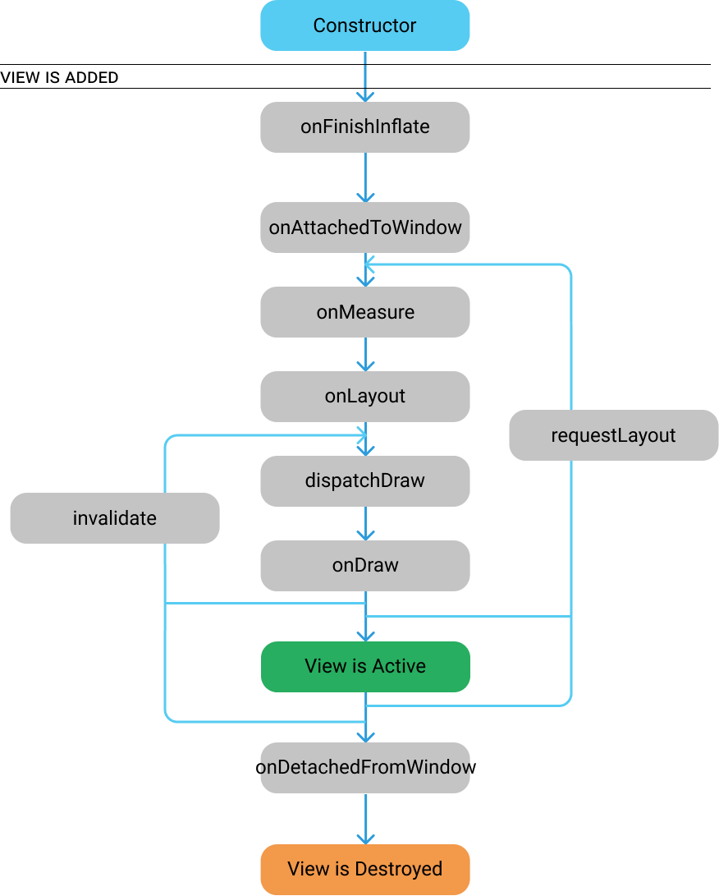

Androidアプリ開発に必要になる概念を学んでいきます
ページ内の学習ポイント
Androidアプリを構成する要素を解説します。
当ページではAndroidアプリを開発する際に出てくる要素、概念を解説しますので、詳しい理解はせずともどんなものを指しているかイメージできるように学習します。
Android開発における４大要素
Android アプリの開発には重要に扱われている4大要素があります。
各要素を一言で表すと以下４つになります。
１. 画面
２. アプリ/機能の呼び出し
３. バックグラウンド実行
４. 外部からの呼び出し受付
また上記の要素をAndroidアプリの開発に当てはめると以下名称にて使われます。
- Activity(1.画面)
- Intent(2.アプリ/機能の呼び出し)
- Service(3.バックグラウンド実行)
- Broad Cast Receiver (4.外部からの呼び出し受付)
Activity
アプリ開発における画面を指し、ユーザーからの操作の受付、ユーザーへの情報表示のために使用します。
Activity内にはwidgetまたはviewと呼ばれる要素（ボタンや画像）を配置して機能を追加する。
また画面単位の要素としてFragmentが存在し、Activity内に表示させて使うことが推奨されている。
Intent
Activity間の呼び出しを行うための仕組み。
画面遷移やActivity間でのデータのやりとり、他にもメールアプリやブラウザアプリなど、
外部アプリの呼び出しを行う時に利用します。
Service
バックグラウンドで長時間の作業を行うためのコンポーネントです。
例として、Content Providerや非同期通信によるデータのやりとり、画面を表示しないまま音楽再生をする場合などに利用します。
Content Provider
構造化されたデータへのアクセスを管理する仕組み。
アプリ内のデータベースとのやりとりや端末内の別アプリが管理しているデータへのアクセスを行う場合などに利用します。
その他の要素
- Fragment
- View
- ViewGroup
- Widget
- Life cycle (ライフサイクル)
Fragment
コンテンツやWidget,ライフサイクルを持ったView
子要素を持つことが可能なのでActivityと同じようにViewGroupやWidgetを配置することができる。
また、Activityと独立したライフサイクルを持っており、ライフサイクルはActivityに近い形で実装されている。
View
ウィジェットやViewGroupの総称、こちらにもライフサイクルに近い機能は存在しているが、
ActivityやFragmentとは違ったサイクルが存在する。
LifeCycle項目で紹介します。
ViewGroup
子要素を持つことができるView
LinearLayout,RelativeLayout、最近追加されたものとしてはConstraintLayoutが該当します。
他にListViewやGridView、RecyclerViewもViewGroupに該当します。
どのコンポーネントも内部にView要素を持つことができる要素になります。
LinearLayoutやRelativeLayoutは画面内の配置を容易にしてくれる機能を持っていたり、
ListViewなどは一覧データを並べて表示する機能があります。
Widget
子要素を持つことができないView、これをViewと呼ぶことが多い気がします
ButtonやTextView、CheckBoxなどがWidgetと呼ばれる要素になります。
コンポーネント自体がユーザインターフェースの役割をこなすことができるViewになります
LifeCycle
Androidの画面要素にはLife cycleと言う概念を含んでおり、
Activity / Fragment View要素にはそれぞれインスタンス化前、表示前、非表示前、破棄前など要素ごとに表示やアプリ内での状態が切り替わったタイミングで強制的に処理される
各クラスのライフサイクルに関して
Activityのライフサイクル※1
Fragmentのライフサイクル※2
Viewのライフサイクル※3
